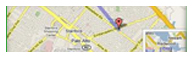
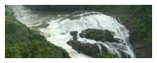

To make your stay convenient we provide the necessary facilities. Our cottages are well set up with all the amenities you need to have a comfortable stay. Enjoy traditional Coorgi homemade delicacies, camp out around a bonfire with the family or stay in and enjoy a movie or your favorite TV show while sipping on some aromatic coffee brewed fresh from the estate around you. We cater to you and are intent on providing the best Coorg has to offer.
Facilities Include:
- 24 hour hot water
- Wifi Internet
- LCD TV
- Satellite Connection
- Electric kettle
- Arrangements for camp fire on prior request
- Dinner on prior request
- Complementary Breakfast
- Extra beds on request
- Electricity back up
- Cab/Taxi arrangement on prior request
- GUIDE arrangement on prior request
| Booking will be confirmed on full payment in advance through bank transfer. |
| Find Us |
|  |
| Deera Estate, Horoor Post, Sunticoppa, Madikeri (Mercara) |
| Photo Gallery |
|  |
| Coorg attractions |
| 46 kilometers from Madikeri lies Talacauvery, the source of the sacred river Cauvery. Climb up to a panoramic view of mountains and the beautiful shrine with a silve... |
| Read More |